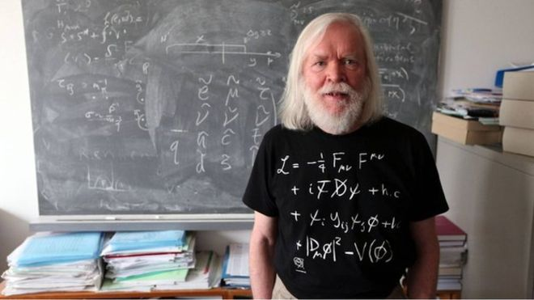
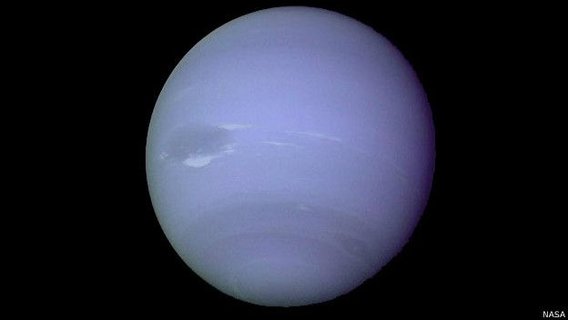
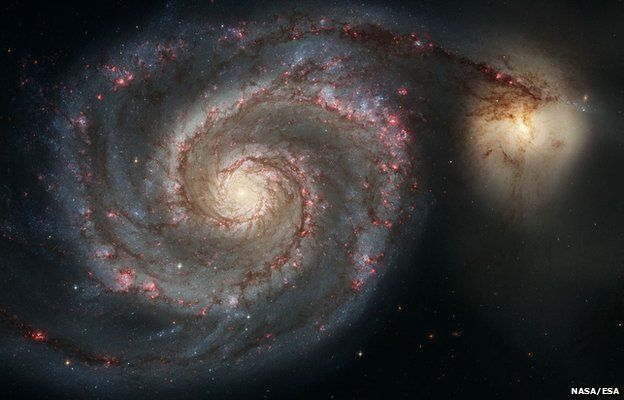
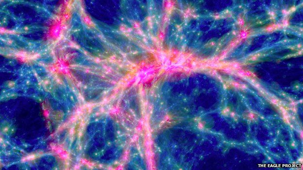
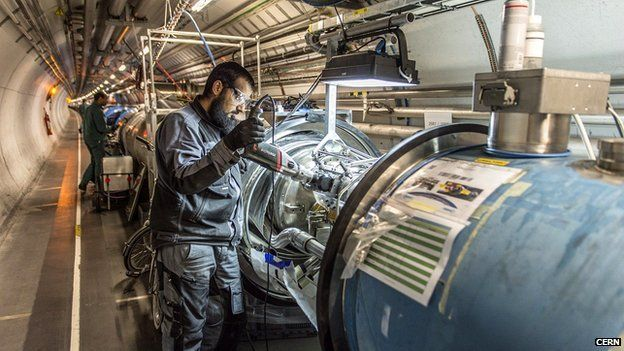

<!doctype html>
<html>
	<head>
		<meta charset="utf-8" />
		<title></title>
		<script type="text/javascript">

			var parrafos = [
				"Dicen que las obras musicales más difíciles de interpretar son, por lo general, las más simples. Lo mismo ocurre en el ámbito de la ciencia: preguntas como 'de qué está hecho el universo' evaden incluso a los físicos más brillantes.<br>",

				"<br>",

				"Pero esto puede cambiar. El Gran Colisionador de Hadrones en el CERN, el acelerador europeo de partículas localizado en la frontera franco-suiza, vuelve a funcionar tras una pausa por mantenimiento y modernización de dos años.<br>",

				"<br>",

				"Se anticipa -o se espera- que el aumento de su potencia permita finalmente revelar la identidad de la 'materia oscura', una entidad invisible pero crítica que conforma alrededor de un cuarto del universo.<br>",

				"<br>",

				"La materia oscura apareció en el radar de la mayoría de los científicos en 1974, gracias a las observaciones de la astrónoma estadounidense Vera Rubin, quien notó que las estrellas que orbitan alrededor de los agujeros negros en el centro de las galaxias en espiral como la nuestra lo hacen a la misma velocidad, independientemente de la distancia a la que se encuentran del centro.<br>",

				"<br>",

				"Esto no debería ocurrir, y no pasa aparentemente en sistemas comparables como nuestro Sistema Solar, en el que la velocidad de los planetas atrapados por la gravedad de la órbita solar se ralentiza cuanto más lejos se encuentran de la estrella.<br>",

				"<br>",

				"Las estrellas observadas por Rubin moviéndose a la misma velocidad fueron una sorpresa: tenía que haber algo más allí -que provea más gravedad- de lo que podemos ver. Materia oscura.<br>"

			];
			var myVar;
			var contador=0;

			function iniciarIntervalo() {
			    myVar = setInterval(calcularFactorial, 5000);
			}

			function calcularFactorial() {
				document.getElementById("p").innerHTML += parrafos[contador];
				
				if(contador==10){clearInterval(myVar);}

				contador++;
			}

			iniciarIntervalo();

		</script>
		<style>

			img{
				height:150px;
			}

		</style>
	</head>
	<body>
		<p id="p"></p>
	
	</body>
</html>	